R Graphics with qplot
David Gerard
2021-04-22
Introduction
I show you how to create the most important plots for this course.
Before using qplot in a new R session, always first load the {ggplot2} library.
library(ggplot2)I use this dataset
data(mpg, package = "ggplot2")In this vignette, we’ll also make some variable transformations, so we will need the {dplyr} package.
library(dplyr)General Considerations
The main options that I use are
- Options for
"geom"argument:"point": Makes scatterplots."line": Makes a line plot."histogram": Makes a histogram."boxplot": Makes a boxplot."density": Makes the density plot."bar": First tabulates frequencies of each value, then makes a barplot."smooth": Fits a smooth line to a cloud of points and plots the output."dotplot": Makes a dotplot.
qplot has other arguments that control the way the plot looks. You should read about these arguments. In particular, read carefully the help page ?qplot. Useful ones are:
data: Specify the dataframe that all variables belong to.main: This controls the title.xlab,ylab: These control the x and y axis labels.color: Controls the color of the lines/points.fill: Controls the color of areas (e.g. for histograms).size: Controls the size of points.shape: The shape of points ("circle","square","triangle", etc…)alpha: Controls the level of transparency of points/lines/fills.lwd: Line width.lty: Line type ("solid","dashed","dotted", etc…).facets: Split up the data into multiple plots.
If you want to make all points the same shape/size/color, you need to enclose the size/shape/color using the function I().
If a variable is being treated as continuous rather than categorical, you need to enclose that variable in a factor() function call.
One Variable
Continuous
Histogram
qplot(x = hwy, data = mpg, geom = "histogram", bins = 10)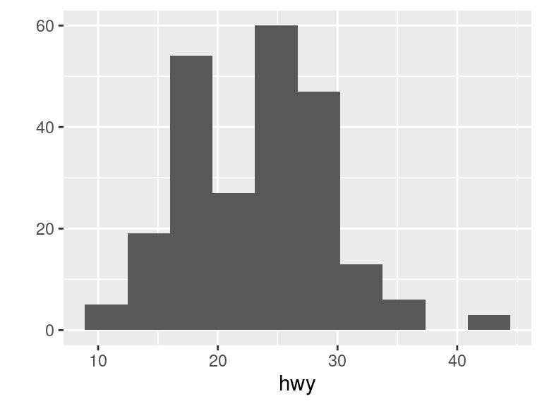
Make the bin lines black and the fill white.
qplot(x = hwy,
data = mpg,
geom = "histogram",
bins = 10,
color = I("black"),
fill = I("white"))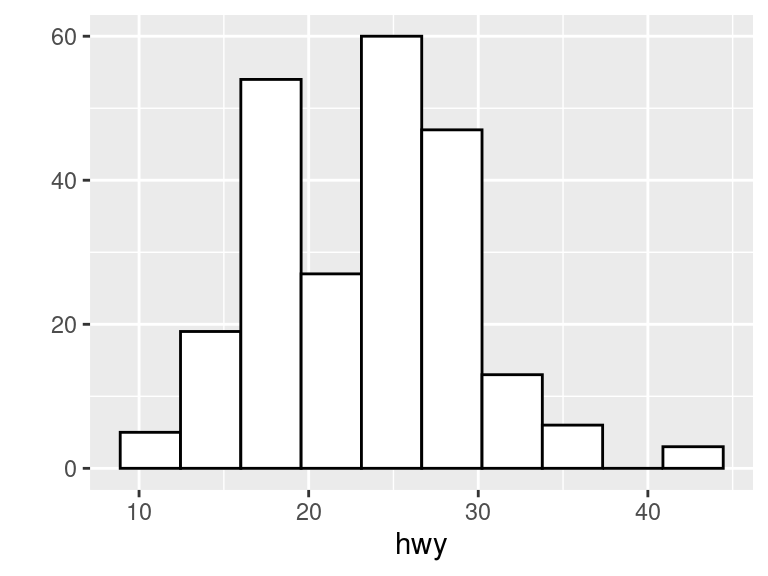
Discrete
Barplot
qplot(x = drv, data = mpg, geom = "bar")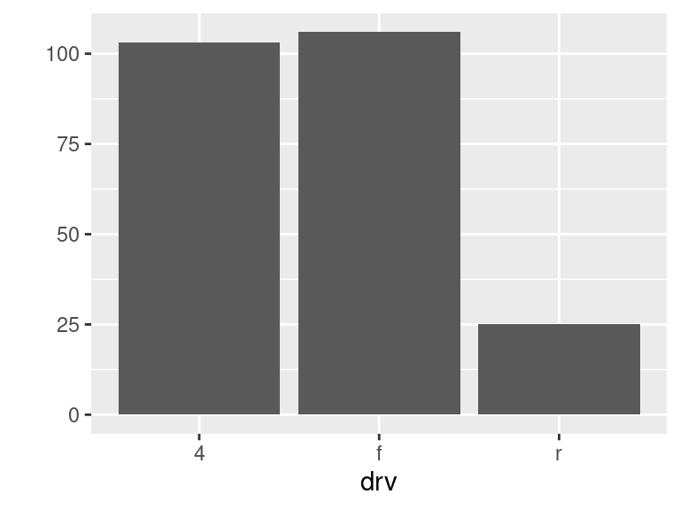
Two Variables
Continuous X, Continuous Y
Scatterplot
qplot(x = cty, y = hwy, data = mpg, geom = "point")Jitter points to account for overlaying points.
mpg <- mutate(mpg, cty_jit = jitter(cty), hwy_jit = jitter(hwy))
qplot(x = cty_jit, y = hwy_jit, data = mpg, geom = "point")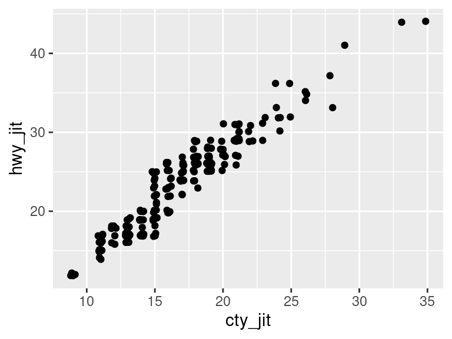
Add a Loess Smoother
qplot(x = cty_jit, y = hwy_jit, data = mpg, geom = "point") +
geom_smooth()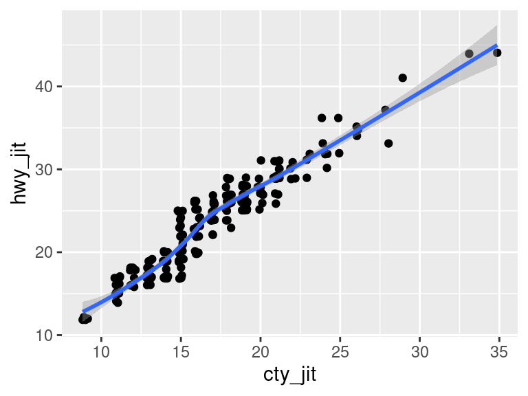
Discrete X, Continuous Y
Boxplot
qplot(x = class, y = hwy, data = mpg, geom = "boxplot")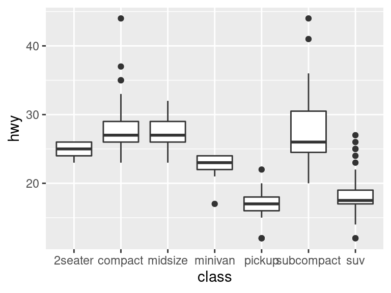
Color Coding and Legends
Color code a scatterplot by a categorical variable and add a legend.
qplot(x = cty_jit, y = hwy_jit, color = drv, data = mpg)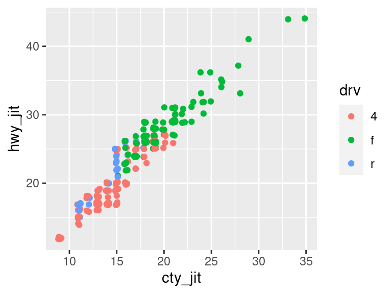
Changing a legend title
qplot(x = cty_jit, y = hwy_jit, color = drv, data = mpg) +
scale_color_discrete(name = "New Name1")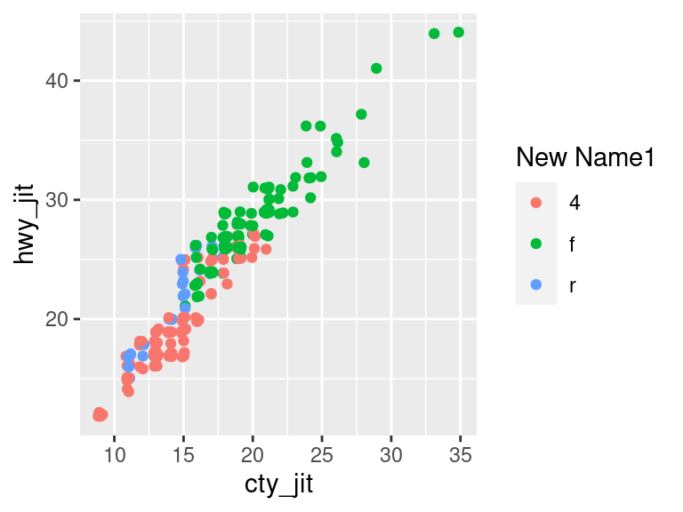
qplot(x = cty_jit, y = hwy_jit, shape = drv, data = mpg) +
scale_shape_discrete(name = "New Name2")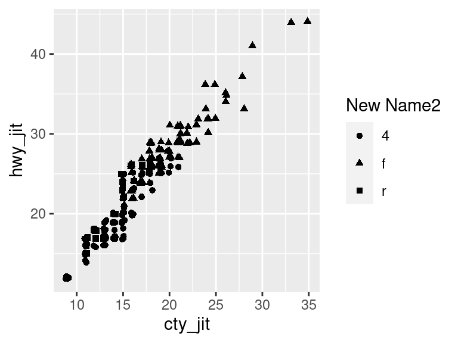
Faceting
You can facet by a categorical variable using the facets argument.
The variable to the left of the tilde (“~”) indexes the row facets, the variable to the right of the tilde indexes the column facets. Using a dot (“.”) in place of a variable means that there will only be one row/column facet.
qplot(cty, hwy, data = mpg, facets = . ~ drv, geom = "point")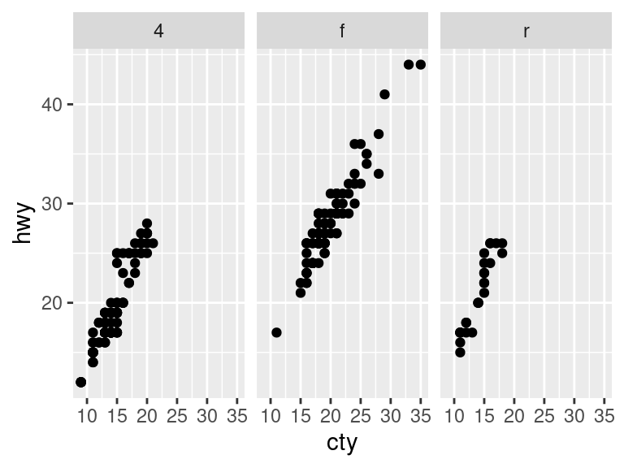
qplot(cty, hwy, data = mpg, facets = drv ~ ., geom = "point")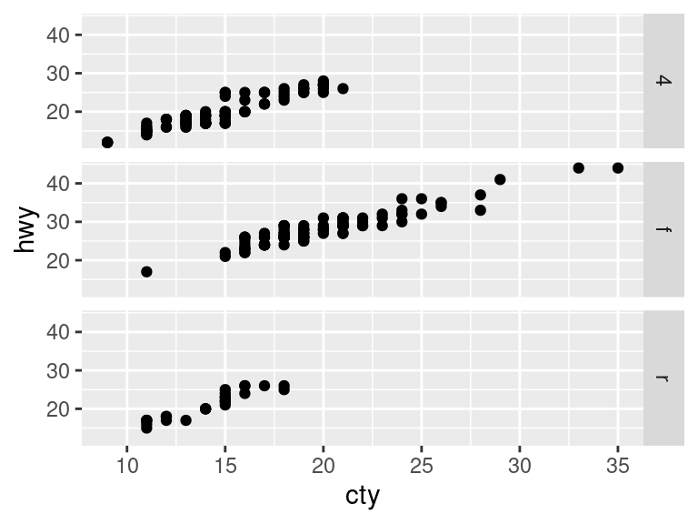
qplot(cty, hwy, data = mpg, facets = fl ~ drv, geom = "point")
Change Theme
qplot(x = cty, y = hwy, data = mpg) +
theme_bw()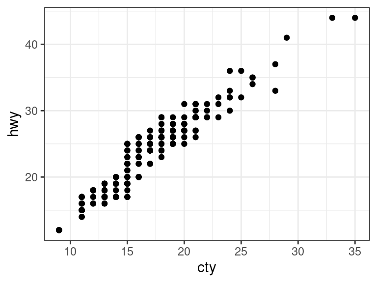